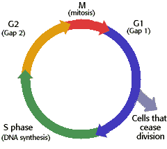

The Biology Project > Cell Biology > Intro. to Cell Cycle & Mitosis > Tutorial
The Cell Cycle & Mitosis Tutorial
The Cell Cycle
Stages of the cell cycle|  | The cell cycle is an ordered set of events, culminating in cell growth and division into two daughter cells. Non-dividing cells not considered to be in the cell cycle. The stages, pictured to the left, are G1-S-G2-M. The G1 stage stands for "GAP 1". The S stage stands for "Synthesis". This is the stage when DNA replication occurs. The G2 stage stands for "GAP 2". The M stage stands for "mitosis", and is when nuclear (chromosomes separate) and cytoplasmic (cytokinesis) division occur. Mitosis is further divided into 4 phases, which you will read about on the next page. |
|
How cell division (and thus tissue growth) is controlled is very complex. The following terms are some of the features that are important in regulation, and places where errors can lead to cancer. Cancer is a disease where regulation of the cell cycle goes awry and normal cell growth and behavior is lost.
Cdk (cyclin dependent kinase, adds phosphate to a protein), along with cyclins, are major control switches for the cell cycle, causing the cell to move from G1 to S or G2 to M. MPF (Maturation Promoting Factor) includes the CdK and cyclins that triggers progression through the cell cycle. p53 is a protein that functions to block the cell cycle if the DNA is damaged. If the damage is severe this protein can cause apoptosis (cell death).
p27 is a protein that binds to cyclin and cdk blocking entry into S phase. Recent research (Nature Medicine 3, 152 (1997)) suggests that breast cancer prognosis is determined by p27 levels. Reduced levels of p27 predict a poor outcome for breast cancer patients. |
Department of Biochemistry and Molecular Biophysics
University of Arizona
April 1997
Revised: August 2004
Contact the Development Team
http://biology.arizona.edu
All contents copyright © 1997 - 2004. All rights reserved.